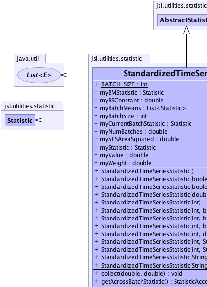
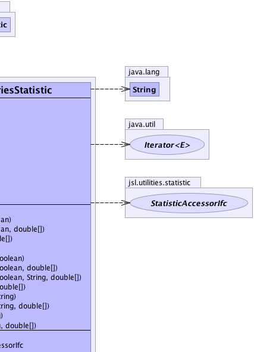
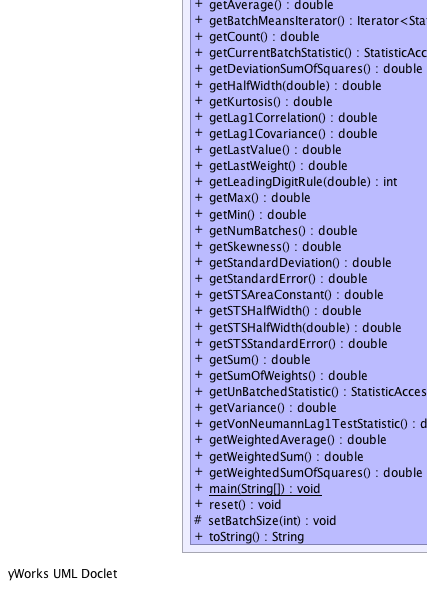
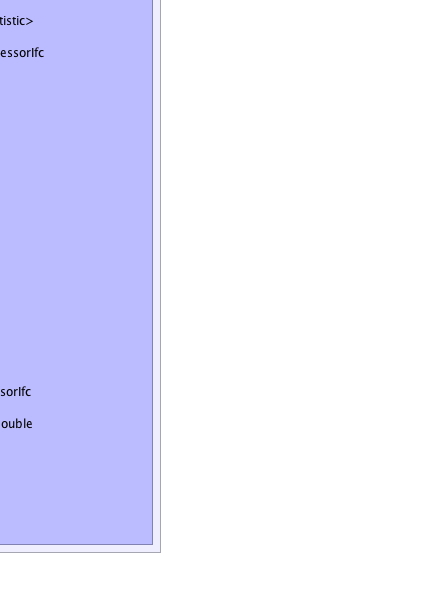

jsl.utilities.statistic.AbstractCollector
jsl.utilities.statistic.AbstractStatistic
jsl.utilities.statistic.StandardizedTimeSeriesStatistic
jsl.utilities.statistic.AbstractCollector
jsl.utilities.statistic.AbstractStatistic
jsl.utilities.statistic.StandardizedTimeSeriesStatistic
|
||||||||||
| PREV CLASS NEXT CLASS | FRAMES NO FRAMES | |||||||||
| SUMMARY: NESTED | FIELD | CONSTR | METHOD | DETAIL: FIELD | CONSTR | METHOD | |||||||||
java.lang.Object
public class StandardizedTimeSeriesStatistic
Implements the Standardized Time Series method as described on page 534 of Law & Kelton, 3rd edition
|  |  |
|  |  |
| Field Summary | |
|---|---|
static int |
BATCH_SIZE
the default minimum number of observations per batch, the batch size |
private java.util.List<Statistic> |
myBatchMeans
Holds the batch means |
private int |
myBatchSize
the size of the current batch |
private Statistic |
myBMStatistic
collects the across batch statistics |
private double |
myBSConstant
|
private Statistic |
myCurrentBatchStatistic
collects the statistics |
private double |
myNumBatches
Number of batches |
private Statistic |
myStatistic
collects the statistics |
private double |
mySTSAreaSquared
A running total of STS Area Squared |
private double |
myValue
the last observed value |
private double |
myWeight
the weight associated with the value |
| Fields inherited from class jsl.utilities.statistic.AbstractStatistic |
|---|
DEFAULT_CONFIDENCE_LEVEL, myConfidenceLevel, myNumMissing |
| Fields inherited from class jsl.utilities.statistic.AbstractCollector |
|---|
myData, myDataArraySize, myId, myName, mySaveCount, mySaveDataFlag, myWeights |
| Fields inherited from interface jsl.utilities.statistic.SaveDataIfc |
|---|
DEFAULT_DATA_ARRAY_SIZE |
| Constructor Summary | |
|---|---|
StandardizedTimeSeriesStatistic()
Creates an STS Statistic with the default batch size = 1024 The batch means will not be saved |
|
StandardizedTimeSeriesStatistic(boolean saveBMFlag)
Creates an STS Statistic with the default batch size = 1024 The batch means will not be saved |
|
StandardizedTimeSeriesStatistic(boolean saveBMFlag,
double[] values)
Creates an STS Statistic with the default batch size = 1024 The batch means will not be saved |
|
StandardizedTimeSeriesStatistic(double[] values)
Creates an STS Statistic with the default batch size = 1024 The batch means will not be saved |
|
StandardizedTimeSeriesStatistic(int batchSize)
Creates an STS Statistic with the given batchsize. |
|
StandardizedTimeSeriesStatistic(int batchSize,
boolean saveBMFlag)
Creates an STS Statistic with the given batch size. |
|
StandardizedTimeSeriesStatistic(int batchSize,
boolean saveBMFlag,
double[] values)
Creates an STS Statistic with the given batch size. |
|
StandardizedTimeSeriesStatistic(int batchSize,
boolean saveBMFlag,
java.lang.String name,
double[] values)
Creates an STS Statistic with the given batch size. |
|
StandardizedTimeSeriesStatistic(int batchSize,
double[] values)
Creates an STS Statistic with the given batchsize. |
|
StandardizedTimeSeriesStatistic(int batchSize,
java.lang.String name)
Creates an STS Statistic with the given batch size and name. |
|
StandardizedTimeSeriesStatistic(int batchSize,
java.lang.String name,
double[] values)
Creates an STS Statistic with the given batch size and name. |
|
StandardizedTimeSeriesStatistic(java.lang.String name)
Creates an STS Statistic with the default batch size = 1024 The batch means will not be saved |
|
StandardizedTimeSeriesStatistic(java.lang.String name,
double[] values)
Creates an STS Statistic with the default batch size = 1024 The batch means will not be saved |
|
| Method Summary | |
|---|---|
void |
collect(double value,
double weight)
Collect weighted statistics on the supplied value using the supplied weight |
StatisticAccessorIfc |
getAcrossBatchStatistic()
Gets a StatisticAccessIfc that represents the across batch statistics |
double |
getAverage()
Gets the unweighted average of the observations. |
java.util.Iterator<Statistic> |
getBatchMeansIterator()
Returns an iterator across all the batch means collected so far |
double |
getCount()
Gets the count of the number of the observations. |
StatisticAccessorIfc |
getCurrentBatchStatistic()
Gets a StatisticAccessIfc for the current batch that is being collected. |
double |
getDeviationSumOfSquares()
Gets the sum of squares of the deviations from the average This is the numerator in the classic sample variance formula |
double |
getHalfWidth(double alpha)
Gets the confidence interval half-width. |
double |
getKurtosis()
Gets the kurtosis of the data |
double |
getLag1Correlation()
Gets the lag-1 sample correlation of the unweighted observations. |
double |
getLag1Covariance()
Gets the lag-1 sample covariance of the unweighted observations. |
double |
getLastValue()
Gets the last observed data point |
double |
getLastWeight()
Gets the last observed weight |
int |
getLeadingDigitRule(double a)
Computes the right most meaningful digit according to (int)Math.floor(Math.log10(a*getStandardError())) See doi 10.1287.opre.1080.0529 by Song and Schmeiser |
double |
getMax()
Gets the maximum of the observations. |
double |
getMin()
Gets the minimum of the observations. |
double |
getNumBatches()
Gets the number of batches |
double |
getSkewness()
Gets the skewness of the data |
double |
getStandardDeviation()
Gets the unweighted sample standard deviation of the observations. |
double |
getStandardError()
Gets the standard error of the observations. |
double |
getSTSAreaConstant()
Computes an estimate of the STS Area Constant |
double |
getSTSHalfWidth()
Computes the half-width of a STS based confidence interval based on a 95% confidence level |
double |
getSTSHalfWidth(double level)
Computes the half-width of a STS based confidence interval based on the supplied confidence coefficient. |
double |
getSTSStandardError()
Gets the standard error for the STS confidence interval |
double |
getSum()
Gets the unweighted sum of the observations. |
double |
getSumOfWeights()
Gets the sum of the observed weights. |
StatisticAccessorIfc |
getUnBatchedStatistic()
Gets a StatisticAccessorIfc that represents statistics that have been collected on each unbatched data point This is the same as using a Statistic on the data |
double |
getVariance()
Gets the unweighted sample variance of the observations. |
double |
getVonNeumannLag1TestStatistic()
Gets the Von Neumann Lag 1 test statistic for checking the hypothesis that the data are uncorrelated Note: See Handbook of Simulation, Jerry Banks editor, McGraw-Hill, pg 253. |
double |
getWeightedAverage()
Gets the weighted average of the observations. |
double |
getWeightedSum()
Gets the weighted sum of observations observed. |
double |
getWeightedSumOfSquares()
Gets the weighted sum of squares of the observations. |
static void |
main(java.lang.String[] args)
|
void |
reset()
Resets the collection as if no data had been collected. |
protected void |
setBatchSize(int batchSize)
Sets the number of batches, must be >=2 |
java.lang.String |
toString()
Returns a String representation of the Statistic |
| Methods inherited from class jsl.utilities.statistic.AbstractStatistic |
|---|
compareTo, fillStatistics, getConfidenceInterval, getConfidenceInterval, getConfidenceLevel, getCSVHeader, getCSVStatistic, getCSVStatisticHeader, getCSVValues, getHalfWidth, getNumberMissing, getStatistics, getStatistics, setConfidenceLevel |
| Methods inherited from class jsl.utilities.statistic.AbstractCollector |
|---|
clearSavedData, collect, collect, collect, collect, collect, collect, collect, getId, getName, getSaveDataOption, getSavedData, getSavedWeights, saveData, setId, setName, setSaveDataArraySizeIncrement, setSaveDataOption |
| Methods inherited from class java.lang.Object |
|---|
clone, equals, finalize, getClass, hashCode, notify, notifyAll, wait, wait, wait |
| Methods inherited from interface jsl.utilities.statistic.StatisticAccessorIfc |
|---|
getName |
| Field Detail |
|---|
public static final int BATCH_SIZE
private int myBatchSize
private double myBSConstant
private double myNumBatches
private Statistic myStatistic
private Statistic myCurrentBatchStatistic
private Statistic myBMStatistic
private double myValue
private double myWeight
private double mySTSAreaSquared
private java.util.List<Statistic> myBatchMeans
| Constructor Detail |
|---|
public StandardizedTimeSeriesStatistic()
public StandardizedTimeSeriesStatistic(java.lang.String name)
name - public StandardizedTimeSeriesStatistic(boolean saveBMFlag)
saveBMFlag - Indicates whether or not the batch means will be saved, true
means saved, false means not saved. False is the default
public StandardizedTimeSeriesStatistic(boolean saveBMFlag,
double[] values)
saveBMFlag - Indicates whether or not the batch means will be saved, true
means saved, false means not saved. False is the defaultvalues - an array of values to collect statistics onpublic StandardizedTimeSeriesStatistic(double[] values)
values - an array of values to collect statistics on
public StandardizedTimeSeriesStatistic(java.lang.String name,
double[] values)
name - The namevalues - an array of values to collect statistics onpublic StandardizedTimeSeriesStatistic(int batchSize)
batchSize - Must be >= 2
public StandardizedTimeSeriesStatistic(int batchSize,
double[] values)
batchSize - Must be >= 2values - an array of values to collect statistics on
public StandardizedTimeSeriesStatistic(int batchSize,
java.lang.String name)
batchSize - Must be >= 2name - The name
public StandardizedTimeSeriesStatistic(int batchSize,
java.lang.String name,
double[] values)
batchSize - Must be >= 2name - The namevalues - an array of values to collect statistics on
public StandardizedTimeSeriesStatistic(int batchSize,
boolean saveBMFlag)
batchSize - Must be >=2saveBMFlag - Indicates whether or not the batch means will be saved, true
means saved, false means not saved. False is the default
public StandardizedTimeSeriesStatistic(int batchSize,
boolean saveBMFlag,
double[] values)
batchSize - Must be >=2saveBMFlag - Indicates whether or not the batch means will be saved, true
means saved, false means not saved. False is the defaultvalues - an array of values to collect statistics on
public StandardizedTimeSeriesStatistic(int batchSize,
boolean saveBMFlag,
java.lang.String name,
double[] values)
batchSize - Must be >=2saveBMFlag - Indicates whether or not the batch means will be saved, true
means saved, false means not saved. False is the defaultname - The name of the statisticvalues - an array of values to collect statistics on| Method Detail |
|---|
public final double getNumBatches()
public final void collect(double value,
double weight)
CollectorIfc
collect in interface CollectorIfccollect in class AbstractStatisticvalue - a double representing the observationweight - a double to be used to weight the observationpublic final void reset()
CollectorIfc
reset in interface CollectorIfcreset in class AbstractCollectorpublic final double getAverage()
StatisticAccessorIfc
public final double getCount()
StatisticAccessorIfc
public final double getSum()
StatisticAccessorIfc
public final double getWeightedSum()
StatisticAccessorIfc
public final double getWeightedSumOfSquares()
StatisticAccessorIfc
public final double getSumOfWeights()
StatisticAccessorIfc
public final double getWeightedAverage()
StatisticAccessorIfc
public final double getDeviationSumOfSquares()
StatisticAccessorIfc
public final double getVariance()
StatisticAccessorIfc
public final double getStandardDeviation()
StatisticAccessorIfc
public final double getHalfWidth(double alpha)
StatisticAccessorIfc
public final double getMin()
StatisticAccessorIfc
public final double getMax()
StatisticAccessorIfc
public final double getLastValue()
StatisticAccessorIfc
public final double getLastWeight()
StatisticAccessorIfc
public final double getKurtosis()
StatisticAccessorIfc
public final double getSkewness()
StatisticAccessorIfc
public final double getStandardError()
StatisticAccessorIfc
public final double getLag1Correlation()
StatisticAccessorIfc
public final double getLag1Covariance()
StatisticAccessorIfc
public final double getVonNeumannLag1TestStatistic()
StatisticAccessorIfc
public final int getLeadingDigitRule(double a)
StatisticAccessorIfc
public final java.util.Iterator<Statistic> getBatchMeansIterator()
public final double getSTSStandardError()
public final double getSTSHalfWidth()
public final double getSTSHalfWidth(double level)
level -
public final double getSTSAreaConstant()
public final StatisticAccessorIfc getAcrossBatchStatistic()
public final StatisticAccessorIfc getCurrentBatchStatistic()
public final StatisticAccessorIfc getUnBatchedStatistic()
public final java.lang.String toString()
StatisticAccessorIfc
toString in interface StatisticAccessorIfctoString in class java.lang.Objectprotected final void setBatchSize(int batchSize)
batchSize - The number of batches to setpublic static void main(java.lang.String[] args)
|
||||||||||
| PREV CLASS NEXT CLASS | FRAMES NO FRAMES | |||||||||
| SUMMARY: NESTED | FIELD | CONSTR | METHOD | DETAIL: FIELD | CONSTR | METHOD | |||||||||